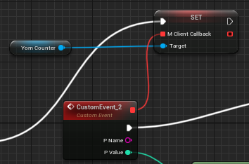
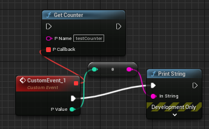
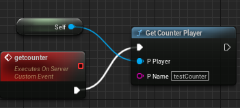

- Generated by
 1.9.5
1.9.5
|
YOM Replicator SDK 0.5.0.0
A metaverse SDK created by YOM
|
The Your Open Metaverse plugin allows creators to design their own counters. This guide will explain how to create and use your own counters with our ecosystem.
To use the features of the counter, it needs to be added to the world first.
YOM Counter is an actor and needs to be manually added to the world to start working. To add the actor, you will have to slide the actor from Content Browser under Plugins -> YOM Content -> Counter into your world.
After this, you can call counter functions through blueprints without errors.
To use the auto replicating feature of the counter (updating a counter value is shared with other clients), you will need to add the counter component to the player blueprint. You can do this by going to the player blueprint and using the add button on the top left corner of the screen.
After you do this, you can define what to do when a counter value is updated. This is done by using a callback event. This callback event gives you the name of the counter which is updated and its new value.

When a counter value is updated with GetCounterPlayer blueprint function, this callback function will be called on all of the clients with a counter component. Returned value and the name can be used however you like.
From the blueprint actions box (it is automatically open or you should right click to the screen), search for Yom Counter in order to see the available functions.
Example use case for Get Counter function

In this example, we are trying to get testCounter in the current metaspace. Counter value is returned by a callback therefore we drag and drop P Callback node and create a custom event. P value returned by the event is the value of the counter which can be used however the user wants. In this example case it is printed to development screen.
Example use case for Add to Counter function
In this example, counter is set to increment the testCounter in the current metaspace by value 1. Therefore, this will increment that counter value by 1. P Callback function is the function which is returned after API Request is done. It can be used to execute more commands when your increment/decrement request is done.
If callback function is not required, a dummy callback function can be created as it can be seen from the image.
Finally, we can use Get Counter Player blueprint function in order to replicate the get request of the counter value. When it is called from a client, it makes a server call which is replicated to other clients as well. This way, all of the connected clients are getting the new value of the counter as well as the name of the counter.
Example use case for Get Counter Player function
